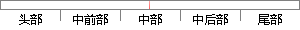

Redis支持主从同步。
片段位置图

相似结果|
相似片段 1： 支持采用 Java，C/C++，C#，PHP，JavaScript，Perl，Object-C，Python，Ruby，Erlang等语言进行编写，使用十分方便。Redis支持主从同步，数据可以从主服务器向任意数量的从服务器上同步，这使 Redis可执行单层树复制。
相似片段 2：，JavaScript，Perl，Object—C，Python，Ruby，Erlang等客户端，使用很方便。Redis支持主从同步，数据可以从主服务器向任意数量的从服务器上同步，从服务器可以是关联其他从服务器的主服务器。
相似片段 3：除此之外，Redis还支持多种方式的排序。作为数据缓存在内存中的数据库，Redis与Memcached的区别在于Redis周期性地将修改操作写入记录文件，同时把数据更新写入磁盘，实现了主从同步
相似片段 4：、Object．C、Erlang、Python、Ruby等客户端，使用很方便。Redis支持主从同步。数据可以从主服务器向任意数量的从服务器上同步，从服务器可以是关联其他从服务器的主服务器。Redis可执行单层
相似片段 5：像MEMCACHED这类key／value内存数据库的不足，在一些场合下REDIS数据库可以对关系数据库起到很好的补充作用。REDIS还支持主从同步操作，即REDIS内的数据可以从主服务器向任意从服务器上进行同步，这里的主从服务器是相对的，所以从服务器也可以是关联其他从服务器的主服务器。
相似片段 6：客户端，使用很方便。Redis支持主从同步。数据可以从主服务器向任意数量的从服务器上同步，从服务器可以是关联其他从服务器的主服务器。这使得RediS可执行单层树复制。磁盘可以有意无意的对数据进行写操作
相似片段 7：，在部分场合可以对关系数据库起到很好的补充作用。它提供了 Java，C/C++，C#，PHP，JavaScript，Perl，Object-C，Python，Ruby，Erlang等客户端，使用很方便。Redis支持主从同步。
相似片段 8：，JavaScript，Perl，Object．C，Python，Ruby，Erlang等客户端，使用很方便。Redis支持主从同步。数据可以从主服务器向任意数量的从服务器上同步，从服务器可以是关联其他
相似片段 9： is: ”, data);3. })4. Console.log(“Reading file.data…\n”);16性操作，在这些操作的基础上 Redis还具有各种不同方式的排序能力。（3）支持主从
相似片段 10：。BinarylogIOthreadSQLDataChangesReadReplyWriteMaster Slave图 4.8 Redis主从同步模式上图 4.8为 Redis主从同步模式图。Redis的 master/slave模式可以是“一主一从”，也可以是“一主多
|
※ 片段修改建议 ※
近似词参考：- 支持：撑持 支撑
系统自动生成语句：Redis撑持主从同步。
注：本片段修改建议为系统自动生成，仅供参考。